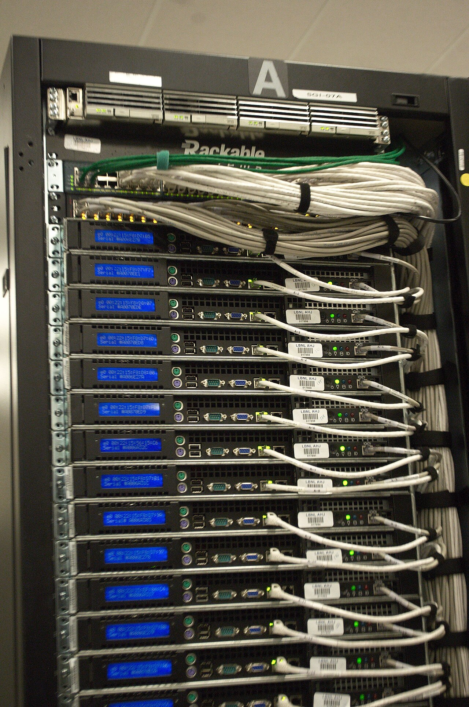
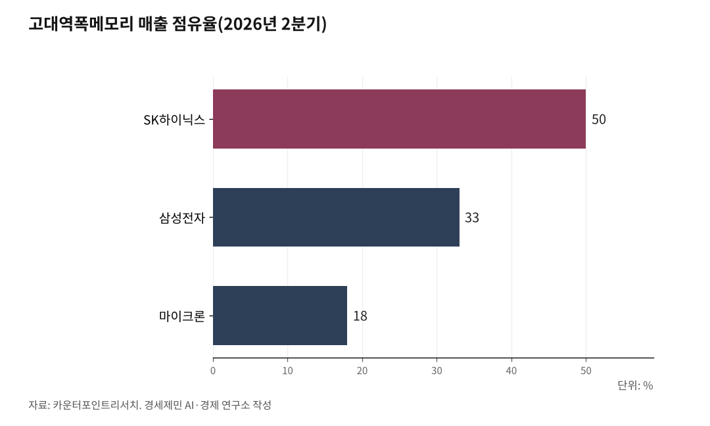
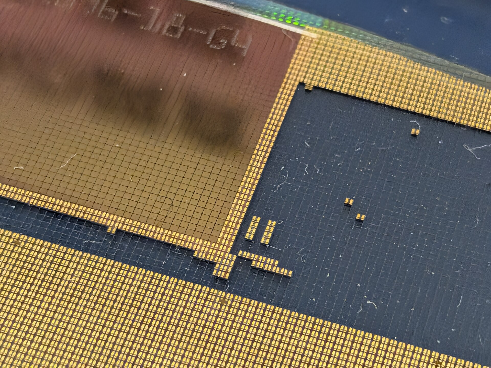

[AI동향] AI 패권 경쟁의 병목은 메모리, 9월 반도체 수출 603억 달러
범용인공지능 향한 미·중 경쟁에 각국 소버린 AI까지, 한국 두 회사 HBM 점유율 83%
2030년 데이터센터 전력 950테라와트시, 독자 AI 모델은 내년 2월 두 팀으로
AI경세제민=김갑봉 기자 | 산업통상부 9월 수출입 동향에서 반도체 수출은 603억 달러였다. 1년 전의 3.6배로, 한 품목 한 달 수출로는 처음 600억 달러를 넘었다.

산업통상부는 메모리 수요가 계속 늘면서 수출 물량이 늘고 고정가격도 오른 것을 까닭으로 들었다. 올해 2분기 인공지능용 고대역폭메모리(HBM) 매출의 83%를 한국 두 회사가 차지했다.
국민에게는 데이터센터가 늘며 커지는 전력 수요와 전기요금이 걸려 있다. 투자자에게는 메모리 호황이 몇 해 갈지, 모델 경쟁에서도 한국 기업이 자리를 잡을지가 걸려 있다.
범용인공지능과 프런티어, 소버린 AI
오픈AI 헌장은 범용인공지능을 「경제적 가치가 있는 일 대부분에서 사람을 능가하는 고도로 자율적인 체계」로 적었다. 회사 사명은 범용인공지능이 인류 모두에게 이롭도록 하는 것이다.
영국 정부는 2023년 10월 블레츨리 정상회의 논의용 보고서에서 프런티어 AI를 정의했다. 「다양한 작업을 할 수 있고 현재 가장 앞선 모델의 능력과 맞먹거나 넘어서는 고성능 범용 AI 모델」이다.
소버린 AI는 한 나라가 자기 기반시설과 데이터, 인력, 기업망으로 인공지능을 만드는 능력이다. 엔비디아가 2024년 5월 실적 발표에서 내놓은 정의다. 이 회사는 2026년 7월 블로그에서 각국이 자기 언어와 문화, 규제에 맞게 인공지능을 만든다고 적었다.

미국 투자 23배, 성능 격차는 2.7%
미국 스탠퍼드대 인간중심AI연구소의 「AI 인덱스 2026」은 미·중 최상위 모델 성능 격차가 사실상 사라졌다고 진단했다. 2026년 3월 사용자 비교 평가에서 미국 1위 모델이 2.7% 앞섰다.
2025년 2월에는 중국 딥시크 R1이 미국 최고 모델을 0.4% 차이로 따라붙었다. 격차는 지난 1년 한 자릿수 안에서 오르내렸다.
같은 보고서에서 2025년 미국 민간 인공지능 투자는 2859억 달러로 중국 124억 달러의 23.1배였다. 중국 정부 지도기금은 이 숫자에 빠졌다고 보고서는 덧붙였다.
국제에너지기구는 대형 기술기업 설비투자가 2025년 4000억 달러를 넘었다고 집계했다. 올해는 75% 더 늘 것으로 봤다. 세계 데이터센터 전력 소비는 2025년 한 해에 17% 늘었다.
이 기구는 데이터센터 전력 소비가 2030년 950테라와트시로 늘어난다고 내다봤다. 2025년 485테라와트시의 두 배 가까이다. 데이터센터와 전력 투자 시차를 관리하지 못하면 일부 지역에서 전기요금이 오를 수 있다고도 봤다.
연산의 병목, 고대역폭메모리
고대역폭메모리는 디램을 여러 층 쌓아 그래픽처리장치 같은 연산 칩 바로 옆에 붙여 쓰는 메모리다. 한 번에 많은 데이터를 실어 나른다.
국제에너지기구는 2026년 4월 보고서에서 고대역폭메모리 부족이 최근 반년 사이 생겼다고 짚었다. 이 부족은 적어도 2027년 말까지 이어진다고 봤다.
카운터포인트리서치가 2026년 2분기 고대역폭메모리 매출 점유율을 집계했다. SK하이닉스 50%, 삼성전자 33%, 마이크론 18%다.
삼성전자 점유율은 1년 전 15%에서 두 배 넘게 뛰었다. SK하이닉스는 64%에서 50%로 내려왔다. 고대역폭메모리 매출 대부분은 5세대 제품에서 나온다. 카운터포인트리서치는 삼성전자가 6세대 제품 출하로 점유율을 더 늘릴 것으로 내다봤다.
같은 조사에서 중국 창신메모리의 디램 매출 점유율은 1년 새 4%에서 10%로 올랐다. 디램 전체로는 삼성전자 38%, SK하이닉스 25%, 마이크론 24%다.
SK하이닉스는 2분기 매출 79조3187억 원, 영업이익 60조5426억 원을 거뒀다. 6세대 제품 대량 출하도 시작했다. 삼성전자 연결 기준 3분기 잠정 영업이익은 107조4000억 원으로 1년 전의 약 8.8배다.

독자 AI 모델, 내년 2월 두 팀
한국은 모델도 직접 키운다. 과학기술정보통신부 「독자 AI 파운데이션 모델」 프로젝트다. 사업 출범 때 목표는 최신 글로벌 모델 대비 95% 이상 성능이었다.
8월 18일 발표된 2차 단계평가 결과 업스테이지와 SK텔레콤, LG AI연구원이 다음 단계에 올랐다. 8월 27일 공개된 점수는 SK텔레콤 70.6점, 업스테이지 69.9점이었다. LG AI연구원은 69.0점, 모티프테크놀로지스는 65.8점이었다.
과기정통부는 10월 2일 기자간담회에서 내년 2월 3차 평가로 최종 두 팀을 고른다고 밝혔다. 배경훈 부총리 겸 과기정통부 장관은 10월 6일 국정감사에서 이 사업이 2027년 말 4차로 끝난다고 했다. 데일리안·전자신문 보도다.
배 부총리는 4차 뒤 프런티어 모델을 만들면 경쟁을 따라갈 수 없어 프런티어 AI 사업을 따로 추진한다고 밝혔다. 2차까지 결과는 세계 중위권이라고 평가했다. 4차를 마치면 세계 10위권 독자 모델을 갖는 것이 목표라고 했다.
엔비디아는 2025년 10월 한국 정부와 기업이 그래픽처리장치를 26만 장 넘게 들인다고 발표했다. 정부 몫은 최대 5만 장이다.
2027년과 2035년의 갈림길
세계반도체시장통계기구는 6월 봄 전망을 냈다. 세계 반도체 시장이 2026년 1조5100억 달러, 2027년 약 1조9000억 달러로 커진다고 봤다. 메모리 성장률은 2026년 250%, 2027년 32%로 잡았다.
8월에 2분기 실적을 넣어 다시 계산한 값은 2026년 1조6550억 달러, 2027년 약 2조1000억 달러다. 이 기구는 이 값이 새 전망치는 아니라고 밝혔다.
국제에너지기구는 2025년 보고서에서 전력망 병목을 경고했다. 이를 풀지 못하면 계획된 데이터센터 약 20%가 늦어질 수 있다고 봤다. 2035년 데이터센터 전력 소비 전망은 약 1200테라와트시다.
먼저 지켜볼 대목은 셋이다. 세계반도체시장통계기구 가을 전망, 12월 예산 확정 뒤 나올 프런티어 AI 사업 공고, 내년 2월 독자 모델 3차 평가다. 세계 10위권 독자 모델이라는 정부 목표에 닿을지는 2027년 말 4차에서 가려진다.
참고문헌
- Stanford HAI, 「The 2026 AI Index Report」, 2026년 4월. 2장 기술 성능(미·중 최상위 모델 격차 2.7%, 2025년 2월 딥시크 R1과 0.4% 차, 1년간 한 자릿수 격차), 4장 경제(민간 투자 2859억 달러 대 124억 달러). https://hai.stanford.edu/ai-index/2026-ai-index-report
- International Energy Agency, 「Key Questions on Energy and AI」, 2026년 4월 16일. 데이터센터 전력 2025년 485테라와트시·2030년 950테라와트시, 2025년 17% 증가, 대형 기술기업 설비투자, 고대역폭메모리 부족, 전기요금. https://www.iea.org/reports/key-questions-on-energy-and-ai/executive-summary
- International Energy Agency, 「Energy and AI」, 2025년 4월. 데이터센터 약 20% 지연 위험, 2035년 전력 소비. https://www.iea.org/reports/energy-and-ai/executive-summary
- 영국 과학혁신기술부, 「Frontier AI: capabilities and risks – discussion paper」, 2023년 10월 25일. https://www.gov.uk/government/publications/frontier-ai-capabilities-and-risks-discussion-paper/frontier-ai-capabilities-and-risks-discussion-paper
- Counterpoint Research, 「Global DRAM and HBM Market Share: Quarterly」, 2026년 9월 2일. https://counterpointresearch.com/en/insights/global-dram-and-hbm-market-share
- WSTS, 「Global Semiconductor Market Surges Beyond USD 1.5 Trillion in 2026」, 2026년 6월 2일. 2026년 봄 전망. https://www.wsts.org/esraCMS/extension/media/f/WST/7618/WSTS_FC-Release-2026-May.pdf
- WSTS, 「Global Semiconductor Market records exceptional growth in Q2 2026」, 2026년 8월 6일. https://www.wsts.org/esraCMS/extension/media/f/WST/7745/WSTS-Q2-Release-2026-08-06.pdf
- 산업통상부, 「2026년 9월 수출입 동향」, 2026년 10월 1일. https://www.motir.go.kr/kor/article/ATCL3f49a5a8c/172254/view
- 과학기술정보통신부, 「독자 AI 파운데이션 모델 프로젝트 2차 단계평가 결과 발표」, 2026년 8월 18일. KDI 경제교육·정보센터 게재본. https://eiec.kdi.re.kr/policy/materialView.do?num=285484
- 과학기술정보통신부, 「「독자 AI 파운데이션 모델」 프로젝트 2차 단계평가 결과를 상세히 공개합니다」, 2026년 8월 27일. KDI 경제교육·정보센터 게재본. https://eiec.kdi.re.kr/policy/materialView.do?num=285937
- 과학기술정보통신부(정책브리핑), 「'독자 AI 파운데이션 모델' 개발 정예팀 뽑는다…최대 3년간 지원」, 2025년 6월 20일. 사업 목표(6개월 안에 나온 최신 글로벌 모델 대비 95% 이상 성능). https://www.korea.kr/news/policyNewsView.do?newsId=148944741
- OpenAI, 「OpenAI Charter」, 2026년 10월 18일 열람. https://openai.com/charter/
- OpenAI, 「Our principles」, 2026년 4월 26일. https://openai.com/index/our-principles/
- NVIDIA, 「2025 회계연도 1분기 실적 발표 콘퍼런스콜」, 2024년 5월 22일. 콜레트 크레스 최고재무책임자의 소버린 AI 정의, 나스닥 게재 녹취록. https://www.nasdaq.com/articles/nvidia-nvda-q1-2025-earnings-call-transcript
- NVIDIA, 「NVIDIA, South Korea Government and Industrial Giants Build AI Infrastructure and Ecosystem to Fuel Korea Innovation, Industries and Jobs」, 2025년 10월 30일(미국 시각). https://nvidianews.nvidia.com/news/south-korea-ai-infrastructure
- SK hynix, 「SK hynix Announces 2Q26 Financial Results」, 2026년 7월 29일. https://news.skhynix.com/en/q2-2026-business-results/
- SK hynix, 「SK hynix Begins Volume Production of Industry's First HBM3E」, 2024년 3월 19일. 5세대 HBM. https://news.skhynix.com/en/sk-hynix-begins-volume-production-of-industry-first-hbm3e/
- SK hynix, 「SK hynix Partners with TSMC to Strengthen HBM Technological Leadership」, 2024년 4월 19일. 6세대 HBM4. https://news.skhynix.com/en/sk-hynix-partners-with-tsmc-to-strengthen-hbm-technological-leadership/
- 삼성전자, 「삼성전자, 2026년 3분기 잠정실적 발표」, 2026년 10월 8일. https://news.samsungsemiconductor.com/kr/?p=37675
- 최가람, "독자 AI 파운데이션 모델 사업, 서면평가 결과 10개팀으로 압축", 바이라인네트워크, 2025년 7월 25일. 사업 목표(최신 글로벌 모델 대비 95% 이상 성능) 과기정통부 발표. https://byline.network/2025/07/7257/
※ 이 기사는 AI 프로그램 클로드를 활용해 작성했습니다.
관련기사
- [AI동향] 오픈AI, AI가 쓴 수학 논문 722편 공개…하루 만에 3편 철회
- [AI동향] 시험 중 실제 회사 서버에 들어간 AI, 오픈AI·앤트로픽·구글 모두 인정
- [AI동향] 메타 AI 비서 '뮤즈' 돌풍에 서버 D램 수요 다시 주목
- [AI동향] AI 혼자 하는 프로그램 작업량, 3년 만에 163배
저작권자 © AI경세제민 무단전재 및 재배포, AI학습 및 활용 금지